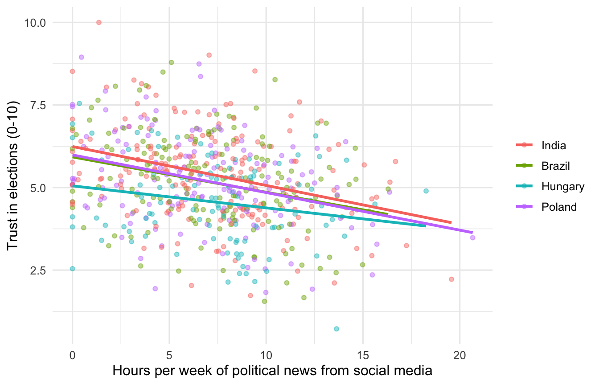
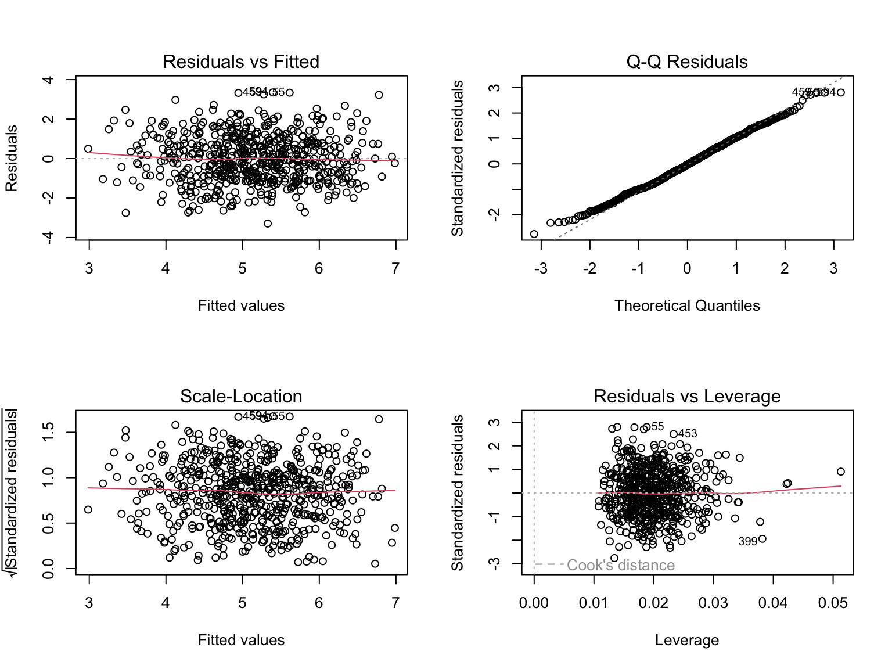
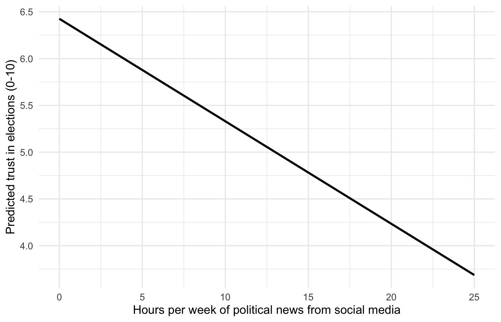
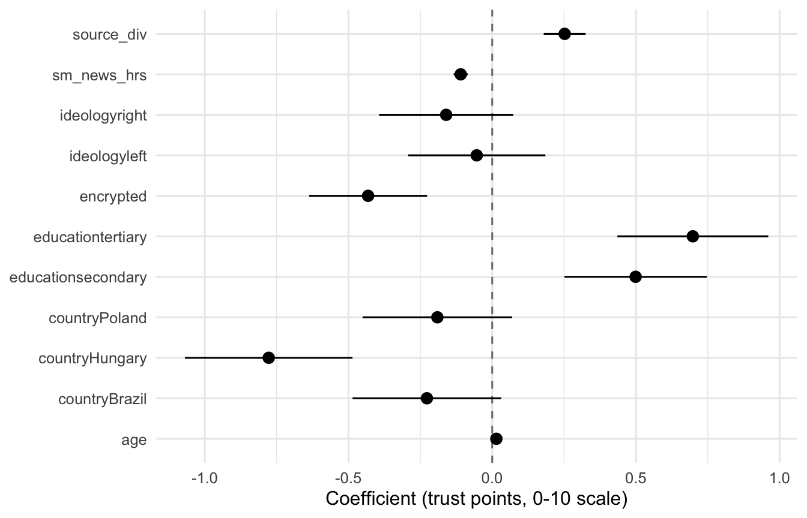

set.seed(2026)
library(dplyr)
library(ggplot2)
library(broom)
library(modelsummary)
library(sandwich)
library(lmtest)
library(car)OLS Regression: A Walkthrough
Bachelor Project 2025-2026, Group 16
1 When to use OLS
Ordinary Least Squares is the default tool when your outcome is continuous (a trust score, a media exposure index, a freedom rating) and you want to estimate the average change in that outcome associated with a one-unit change in some predictor, holding other variables fixed. It is the workhorse you should reach for first when your question is “does X predict Y, controlling for Z?”. Logistic regression, panel methods, and instrumental variables are generalisations of the same logic.
This walkthrough builds a simulated public-opinion survey from four democracies under varying degrees of digital stress and asks whether heavy reliance on social media for political news predicts lower trust in electoral integrity. The data are simulated so the walkthrough runs anywhere; the sequence of steps and vocabulary are the point. Reuse the skeleton on real ESS, Latinobarómetro, V-Dem expert survey, or your own scraped data.
2 Setting up
Install missing packages with install.packages(c("dplyr","ggplot2","broom","modelsummary","sandwich","lmtest","car")).
3 Building a working dataset
We simulate a 600-respondent survey across four countries (Hungary, Poland, India, Brazil) where independent media has come under pressure in the last decade. The outcome is trust_elections, a 0-10 scale on perceived integrity of national elections. The focal predictor is the number of hours per week the respondent gets political news from social media. Controls include encrypted messaging use for political content, news source diversity, age, education, ideology, and country.
Simulating data is also a useful exercise on its own, because it forces you to be explicit about what you think the data-generating process looks like before you ever touch real data.
n <- 600
dat <- tibble(
resp_id = 1:n,
country = sample(c("Hungary", "Poland", "India", "Brazil"),
n, replace = TRUE, prob = c(0.20, 0.25, 0.30, 0.25)),
sm_news_hrs = pmax(rnorm(n, mean = 7, sd = 4), 0),
encrypted = rbinom(n, 1, 0.35),
source_div = pmin(pmax(round(rnorm(n, 3, 1.4)), 1), 8),
age = round(rnorm(n, 42, 14)),
education = sample(c("primary", "secondary", "tertiary"),
n, replace = TRUE, prob = c(0.25, 0.45, 0.30)),
ideology = sample(c("left", "center", "right"),
n, replace = TRUE, prob = c(0.30, 0.40, 0.30))
)
# True data-generating process (you would not know this with real data)
country_lift <- c(Hungary = -0.6, Poland = -0.3, India = 0.0, Brazil = -0.4)
edu_lift <- c(primary = -0.4, secondary = 0.0, tertiary = 0.3)
ideo_lift <- c(left = -0.1, center = 0.0, right = -0.2)
dat <- dat |>
mutate(
trust_elections = 6.0 +
-0.12 * sm_news_hrs +
-0.35 * encrypted +
0.18 * source_div +
0.012 * (age - 40) +
country_lift[country] +
edu_lift[education] +
ideo_lift[ideology] +
rnorm(n, sd = 1.2)
) |>
mutate(
trust_elections = pmin(pmax(trust_elections, 0), 10),
country = factor(country, levels = c("India", "Brazil", "Hungary", "Poland")),
education = factor(education, levels = c("primary", "secondary", "tertiary")),
ideology = factor(ideology, levels = c("center", "left", "right"))
)
glimpse(dat)
#> Rows: 600
#> Columns: 9
#> $ resp_id <int> 1, 2, 3, 4, 5, 6, 7, 8, 9, 10, 11, 12, 13, 14, 15, 16,…
#> $ country <fct> Brazil, Brazil, India, India, Brazil, India, Poland, H…
#> $ sm_news_hrs <dbl> 6.405632, 6.268189, 3.567409, 10.832637, 3.643692, 3.9…
#> $ encrypted <int> 0, 0, 0, 0, 0, 0, 1, 1, 1, 1, 1, 0, 0, 0, 1, 0, 0, 0, …
#> $ source_div <dbl> 3, 4, 3, 2, 4, 1, 4, 3, 1, 2, 5, 1, 5, 5, 5, 3, 2, 1, …
#> $ age <dbl> 20, 34, 41, 32, 61, 44, 30, 35, 27, 35, 57, 29, 51, 38…
#> $ education <fct> tertiary, secondary, secondary, secondary, tertiary, s…
#> $ ideology <fct> center, right, left, right, left, left, right, right, …
#> $ trust_elections <dbl> 4.3175577, 5.5821897, 8.1441606, 4.3796350, 6.4007147,…A note on factors: factor() tells R that a variable is categorical, and the first level becomes the reference category. Coefficients on factor variables are interpreted as differences from that reference. Get the reference level right before fitting, not after. India is set as the reference country here because it is the largest sample; “center” is the reference ideology by convention.
4 Exploration before estimation
Always look at the data before you model it. Two reasons: catch coding errors early, and form an expectation against which the regression output can be sanity-checked.
dat |>
summarise(
mean_trust = mean(trust_elections),
sd_trust = sd(trust_elections),
mean_sm = mean(sm_news_hrs),
n = n()
)
dat |>
group_by(country) |>
summarise(
n = n(),
mean_trust = mean(trust_elections),
sd_trust = sd(trust_elections)
)ggplot(dat, aes(x = sm_news_hrs, y = trust_elections, colour = country)) +
geom_point(alpha = 0.45, size = 1.4) +
geom_smooth(method = "lm", se = FALSE) +
labs(x = "Hours per week of political news from social media",
y = "Trust in elections (0-10)",
colour = NULL) +
theme_minimal(base_size = 12)
The slopes are negative and roughly parallel across countries. That is what we expect to see in the regression.
5 Fitting the model
The model is
\[ \text{trust}_i = \beta_0 + \beta_1 \, \text{sm\_news}_i + \beta_2 \, \text{encrypted}_i + \beta_3 \, \text{source\_div}_i + \mathbf{X}_i' \boldsymbol{\gamma} + \varepsilon_i \]
where \(\mathbf{X}_i\) is the vector of categorical controls (country, education, ideology) plus age. Estimating it in R is one line:
m1 <- lm(trust_elections ~ sm_news_hrs + encrypted + source_div +
age + country + education + ideology,
data = dat)That is the model. Everything below is interpretation and checking.
6 Reading the output
summary(m1)
#>
#> Call:
#> lm(formula = trust_elections ~ sm_news_hrs + encrypted + source_div +
#> age + country + education + ideology, data = dat)
#>
#> Residuals:
#> Min 1Q Median 3Q Max
#> -3.2940 -0.9083 -0.0326 0.8267 3.3488
#>
#> Coefficients:
#> Estimate Std. Error t value Pr(>|t|)
#> (Intercept) 4.580111 0.254660 17.985 < 2e-16 ***
#> sm_news_hrs -0.109565 0.012526 -8.747 < 2e-16 ***
#> encrypted -0.431767 0.104482 -4.132 4.11e-05 ***
#> source_div 0.252107 0.037139 6.788 2.78e-11 ***
#> age 0.014397 0.003831 3.758 0.000188 ***
#> countryBrazil -0.227236 0.131726 -1.725 0.085040 .
#> countryHungary -0.777545 0.148436 -5.238 2.26e-07 ***
#> countryPoland -0.190816 0.132488 -1.440 0.150329
#> educationsecondary 0.498933 0.126035 3.959 8.46e-05 ***
#> educationtertiary 0.697970 0.133629 5.223 2.44e-07 ***
#> ideologyleft -0.053873 0.121610 -0.443 0.657928
#> ideologyright -0.160238 0.118766 -1.349 0.177793
#> ---
#> Signif. codes: 0 '***' 0.001 '**' 0.01 '*' 0.05 '.' 0.1 ' ' 1
#>
#> Residual standard error: 1.203 on 588 degrees of freedom
#> Multiple R-squared: 0.2749, Adjusted R-squared: 0.2614
#> F-statistic: 20.27 on 11 and 588 DF, p-value: < 2.2e-16A few things to walk through:
- Coefficients. Continuous predictors give the change in
trust_electionsper one-unit change in the predictor. Sosm_news_hrs = -0.12means each additional hour per week of social-media political news is associated with a 0.12-point drop on the 0-10 trust scale. For factor variables the coefficient is the difference from the reference level:countryHungary = -0.6says Hungarian respondents score, on average, 0.6 points lower than otherwise-comparable Indian respondents. - Standard errors and t-values. A coefficient is meaningful only relative to its noise. The t-value (estimate divided by standard error) and the associated p-value test the null that the true coefficient is zero. Small p-values mean the data are unlikely under that null; they do not mean the effect is large or important.
- R-squared. The fraction of variance in
trust_electionsthat the model explains. Use it to compare nested models on the same data, not as a quality grade. - F-statistic. Tests whether the model as a whole fits better than an intercept-only model. Almost always significant in real data; rarely interesting on its own.
A cleaner table for inclusion in writing:
modelsummary(
list("Trust in elections (0-10)" = m1),
stars = TRUE,
gof_omit = "AIC|BIC|Log.Lik|RMSE|F"
)| Trust in elections (0-10) | |
|---|---|
| + p < 0.1, * p < 0.05, ** p < 0.01, *** p < 0.001 | |
| (Intercept) | 4.580*** |
| (0.255) | |
| sm_news_hrs | -0.110*** |
| (0.013) | |
| encrypted | -0.432*** |
| (0.104) | |
| source_div | 0.252*** |
| (0.037) | |
| age | 0.014*** |
| (0.004) | |
| countryBrazil | -0.227+ |
| (0.132) | |
| countryHungary | -0.778*** |
| (0.148) | |
| countryPoland | -0.191 |
| (0.132) | |
| educationsecondary | 0.499*** |
| (0.126) | |
| educationtertiary | 0.698*** |
| (0.134) | |
| ideologyleft | -0.054 |
| (0.122) | |
| ideologyright | -0.160 |
| (0.119) | |
| Num.Obs. | 600 |
| R2 | 0.275 |
| R2 Adj. | 0.261 |
7 Checking the assumptions
OLS gives unbiased coefficients under fairly mild conditions (linearity, no perfect multicollinearity, exogeneity). The standard errors and tests, however, lean on extra assumptions: constant error variance (homoskedasticity), independent observations, and approximately normal residuals. Check these.
7.1 Linearity and residuals
par(mfrow = c(2, 2))
plot(m1)
par(mfrow = c(1, 1))What you are looking for:
- Residuals vs Fitted should look like a structureless cloud around zero. A funnel signals heteroskedasticity; a curve signals a missing nonlinear term.
- Q-Q plot should hug the diagonal. Heavy tails are usually fine for inference in large samples; severe departures are a problem.
- Scale-Location is another heteroskedasticity check.
- Residuals vs Leverage flags points that pull the line on their own. Points outside Cook’s distance contours deserve a second look.
7.2 Multicollinearity
vif(m1)
#> GVIF Df GVIF^(1/(2*Df))
#> sm_news_hrs 1.008873 1 1.004427
#> encrypted 1.027142 1 1.013480
#> source_div 1.023331 1 1.011598
#> age 1.033867 1 1.016793
#> country 1.043372 3 1.007101
#> education 1.034675 2 1.008558
#> ideology 1.048549 2 1.011922vif() (variance inflation factor) above 5 is suspicious, above 10 is a real problem. For categorical variables car::vif reports the generalised VIF, which is the right diagnostic. Nothing alarming here.
7.3 Heteroskedasticity test and robust SEs
The Breusch-Pagan test formalises the funnel-shape check:
bptest(m1)
#>
#> studentized Breusch-Pagan test
#>
#> data: m1
#> BP = 13.319, df = 11, p-value = 0.273If you reject homoskedasticity (or even if the diagnostic plot looks suspicious), reach for heteroskedasticity-consistent standard errors. These do not change the coefficient estimates; they correct the standard errors so hypothesis tests are valid.
coeftest(m1, vcov = vcovHC(m1, type = "HC3"))
#>
#> t test of coefficients:
#>
#> Estimate Std. Error t value Pr(>|t|)
#> (Intercept) 4.5801106 0.2564270 17.8613 < 2.2e-16 ***
#> sm_news_hrs -0.1095649 0.0128415 -8.5321 < 2.2e-16 ***
#> encrypted -0.4317668 0.1050141 -4.1115 4.490e-05 ***
#> source_div 0.2521069 0.0359257 7.0175 6.245e-12 ***
#> age 0.0143971 0.0038714 3.7188 0.0002193 ***
#> countryBrazil -0.2272364 0.1366803 -1.6625 0.0969375 .
#> countryHungary -0.7775455 0.1436080 -5.4144 8.973e-08 ***
#> countryPoland -0.1908164 0.1335063 -1.4293 0.1534579
#> educationsecondary 0.4989330 0.1309846 3.8091 0.0001541 ***
#> educationtertiary 0.6979695 0.1337212 5.2196 2.491e-07 ***
#> ideologyleft -0.0538734 0.1183085 -0.4554 0.6490157
#> ideologyright -0.1602383 0.1206790 -1.3278 0.1847575
#> ---
#> Signif. codes: 0 '***' 0.001 '**' 0.01 '*' 0.05 '.' 0.1 ' ' 1Quote the robust standard errors in your thesis if there is any sign of heteroskedasticity, and say so in the methods section. HC3 is the modern default; HC1 is what Stata reports.
8 Visualising effects
A coefficient table tells you the slope. A plot tells you what the slope means across the range of your data.
new_dat <- expand.grid(
sm_news_hrs = seq(0, 25, by = 1),
encrypted = 0,
source_div = round(mean(dat$source_div)),
age = round(mean(dat$age)),
country = "India",
education = "secondary",
ideology = "center"
)
new_dat$pred <- predict(m1, newdata = new_dat)
ggplot(new_dat, aes(sm_news_hrs, pred)) +
geom_line(linewidth = 1) +
labs(x = "Hours per week of political news from social media",
y = "Predicted trust in elections (0-10)") +
theme_minimal(base_size = 12)
For a thesis, a coefficient plot of all predictors with confidence intervals is often more useful than a wall of numbers:
tidy(m1, conf.int = TRUE) |>
filter(term != "(Intercept)") |>
ggplot(aes(estimate, term)) +
geom_vline(xintercept = 0, linetype = "dashed", colour = "grey50") +
geom_pointrange(aes(xmin = conf.low, xmax = conf.high)) +
labs(x = "Coefficient (trust points, 0-10 scale)", y = NULL) +
theme_minimal(base_size = 12)
9 Common pitfalls
A short, opinionated list of things that show up in almost every first regression I read:
- Prescriptive research questions. “How can platforms restore trust in elections?” is not a regression question. “Is social-media news exposure associated with lower trust in elections, controlling for country and ideology?” is. OLS estimates associations; framing should match.
- Bundled outcomes. Do not regress on a five-item composite trust scale without first checking that it is one-dimensional (Cronbach’s alpha, factor analysis). Otherwise you are estimating a slope on a moving target.
- Reverse causality. Distrustful respondents may seek out alternative media. The regression coefficient does not distinguish that direction. Acknowledge it explicitly; do not stop at “associated with”.
- Over-controlling. Adding variables that lie on the causal path between X and Y absorbs the very effect you are trying to estimate. Think about the DAG before throwing in controls.
- Treating dummies as continuous. A categorical variable with five levels is not a 1-to-5 score unless the spacing is meaningful. Use
factor()and live with the dummy coefficients. - Ignoring scale. Predictors measured in tiny units give tiny coefficients; the same predictor rescaled gives readable ones. Rescale predictors so coefficients are interpretable in a written paragraph.
- Reporting only stars. Effect sizes matter more than asterisks. Tell the reader the magnitude in the units of the outcome, not just whether it crossed
p < 0.05. - Cherry-picking the model. Run the analysis you pre-specified. If you try ten specifications and report the prettiest one, your standard errors are lying. If you do explore, say so honestly and report the range.
10 Reporting in your thesis
A regression result paragraph generally has four moves: state the model, state the headline coefficient in plain language, state the precision (standard error or confidence interval), and contextualise with one or two control coefficients. For example:
Holding country, ideology, education, age, encrypted-messaging use, and source diversity constant, each additional hour per week of political news from social media is associated with a 0.12-point drop on the 0-10 trust-in-elections scale (b = -0.12, robust SE = 0.014, p < 0.001). Across the observed range of 0 to 25 hours per week, that is a difference of roughly three points on a ten-point scale, comparable in size to moving from the most-trusting country in the sample (India) to the least-trusting (Hungary).
A regression table belongs in the chapter; the data file and code go in an appendix or repository so the analysis is reproducible.
11 Where to read more
- Wooldridge, Introductory Econometrics (chapters 2-7) is the standard text and the cleanest treatment of OLS interpretation.
- Angrist and Pischke, Mostly Harmless Econometrics, is the right book once you start asking causal questions.
- For diagnostics in R specifically, the documentation for the
performancepackage and thecheck_model()function is excellent.